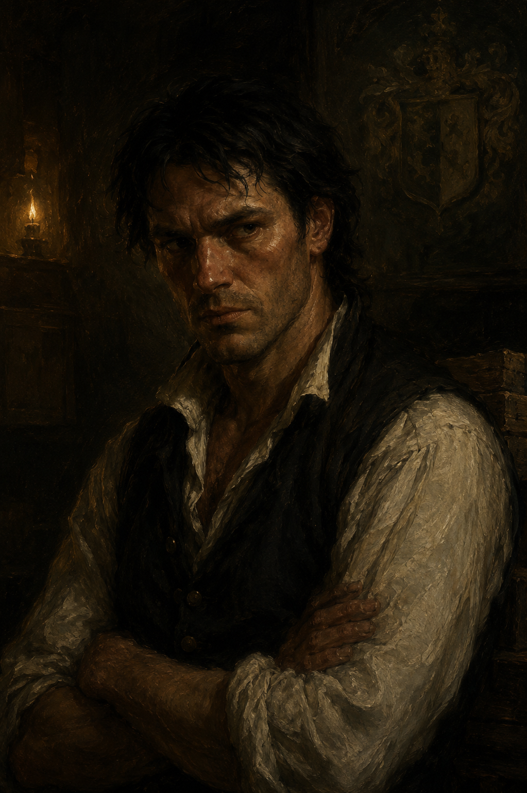

Harker
Runs the Dalmorrian warehouse. Does not want to see Alaric.
Who He Is
- Connected to Jared — appears to be his son; runs the Dalmorrian family warehouse
- Competent and clearly doing the actual work of the household while Jared pursues his new interests
- Hostile to Alaric — the reason is not yet known to Alaric
- First encountered in Session 7: attempted to turn Alaric away at the warehouse door, then got called off to handle warehouse business
What the Crew Has Seen
Alaric arrived at the Dalmorrian warehouse to speak with Jared. Harker intercepted him at the door. The reception was cold — not a formal refusal, but unmistakably unwelcoming. He attempted to turn Alaric away. Before the situation could develop further, something in the warehouse required his attention and he had to withdraw. Alaric proceeded inside and found Jared.
Alaric did not understand the hostility. He may not have registered it fully, or he may be missing something about the history between them.
The Hostility
The specific reason Harker dislikes Alaric has not yet been established. Possibilities worth developing:
- He is Jared’s bastard son — if so, his resentment of the legitimate noble line (which Alaric represents) would be structural. He does the work; Alaric gets the name.
- There is a specific history — something Alaric did or didn’t do that Harker hasn’t forgiven. Alaric’s obliviousness to the hostility suggests he may not know what it was.
- He simply sees Alaric’s criminal associations as a threat to the household — and he’s not wrong about that.
Establish the reason before he appears again. The ambiguity is useful but needs a resolution.
If Jared becomes unavailable or inaccessible, Harker is a viable fallback — he is part of the Dalmorrian household, likely carries the bloodline, and is already doing the practical work of the family. He may be a more competent target than Jared in some ways, though also harder to flatter or manipulate. A different approach would be required.
Connections
Moments to Create
- Establishing the actual reason for the hostility toward Alaric
- A scene where Alaric has to deal with Harker directly — especially if Jared is unavailable
- Whether he notices what the Meridian Circle is doing to Jared — and whether he does anything about it independently
- If Setarra pivots to targeting him instead of Jared